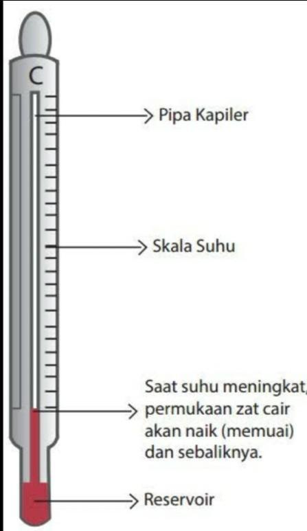
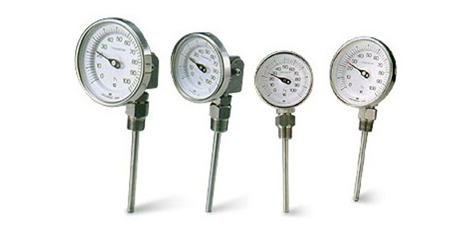
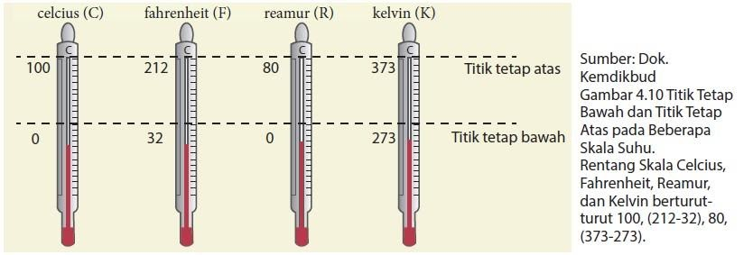
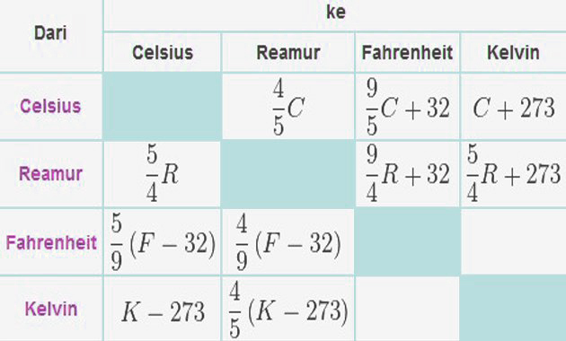

Bab 4 Suhu dan Perubahannya
Bagaimana mengetahui suhu benda
Indra perasa sanggup mencicipi gerah dan dingin. Namun, apakah indra ialah pengukur gerah atau cuek yang handal? Suhu sebuah benda yaitu tingkat (derajat) gerah suatu benda. Benda yang gerah mempunyai derajat gerah lebih tinggi daripada benda yang dingin. Hasil aktivitas penyelidikanmu mengatakan bahwa indra perasa memang sanggup mencicipi tingkat gerah benda. Akan tetapi, indra perasa bukan pengukur tingkat gerah yang andal. Benda yang tingkat gerahnya sama dirasakan tidak sama oleh ajun dan kirimu. Jadi, suhu benda yang diukur dengan indra perasa menghasilkan ukuran suhu kualitatif yang tidak sanggup digunakan sebagai acuan. Suhu harus diukur secara kuantitatif dengan alat ukur suhu yang disebut termometer.
Suhu
Suhu adalah ukuran derajat panas atau dinginnya suatu benda. Alat untuk mengukur suhu disebut termometer. Berdasarkan zat pengisinya, termometer ada 3 jenis : termometer zat cair, bimetal dan kristal cair.
Terdapat 3 Jenis Termometer diantaranya:
-
Termometer zat cair yaitu menggunakan zat cair sebagai pengisi termometer. Zat cair yang digunakan yaitu raksa dan alkohol.
 -
Termometer bimetal yaitu menggunakan 2 logam yang jenisnya berbeda kemudian didekatkan. Ketika suhunya tinggi, maka logam yang lebih panjang akan melengkung. Hal ini dimanfaatkan dalam pembuatan termometer.
 -
Termometer kristal cair yaitu kristal yang dapat berubah warna jika suhunya berubah. Kristal ini dikemas dalam plastik tipis dan digunakan untuk mengukur suhu tubuh, akuarium dan sebagainya.
Skala Termometer
Termometer memiliki 4 skala yaitu : Celcius (°C), Reamur (°R), Fahrenheit (°F), dan Kelvin (K). Namun, yang umum digunakan pada termometer yaitu Celcius. Sedangkan skala menurut sistem internasional (SI) yaitu Kelvin. Skala Kelvin menggunakan nol mutlak. Pada suhu 0 Kelvin, tidak ada energi panas yang dimiliki benda.
Skala Termometer memiliki perbedaan yaitu pada titik tetap bawah dan titik tetap atas seperti pada gambar berikut.
Didalam termometer terdapat rumus agar bisa mengkonversikan dari derajat Celcius>Reamur>Fahreit>Kelvin dan sebaliknya.
Perubahan Akibat Suhu
Apa yang terjadi pada benda jika suhunya berubah? Seperti yang telah dijelaskan sebelumnya di atas, salah satu perubahan yang terjadi pada benda adalah ukuran benda itu akan berubah. Jika suhu benda naik, secara umum ukuran benda bertambah, dan peristiwa tersebut disebut pemuaian.
Pemuaian adalah perubahan benda akibat dari bertambahnya suhu. Ketika suhu berubaha menjadi terlalu panas atau terlalu dingin maka ada benda tertentu yang mengalami perubahan.Pemuaian dapat terjadi pada berbagai zat yang di antaranya adalah sebagai berikut.
-
Pemuaian Zat Padat
Pemuaian zat padat terjadi apabila zat padat dipanaskan, apabila didinginkan maka akan menyusut. Pemuaian terjadi pada semua bagian benda yaitu panjang, lebar, dan tebal. Berikut adalah beberapa koefisian muai panjang beberapa bahan/benda padat.Jenis Bahan Koefisien Muai Panjang(/°C) Kaca biasa 0,000009 Kaca Pyrex 0,000003 Aluminium 0,000026 Kuningan 0,000019 Baja 0,000011 Tembaga 0,000017 -
Pemuaian Zat Cair dan Gas
Seperti zat padat, zat cair juga memuai jika dipanaskan. Bahkan, pemuaian zat cair relatif lebih mudah atau lebih cepat teramati dibandingkan dengan pemuaian zat padat. Oleh karena itu, zat cair lebih banyak digunakan untuk termometer. Gas juga akan memuai jika dipanaskan. Sifat pemuaian gas dapat diperhatikan dalam kehidupan sehari-hari, misalnya ketika memompa ban sepeda, dsb.